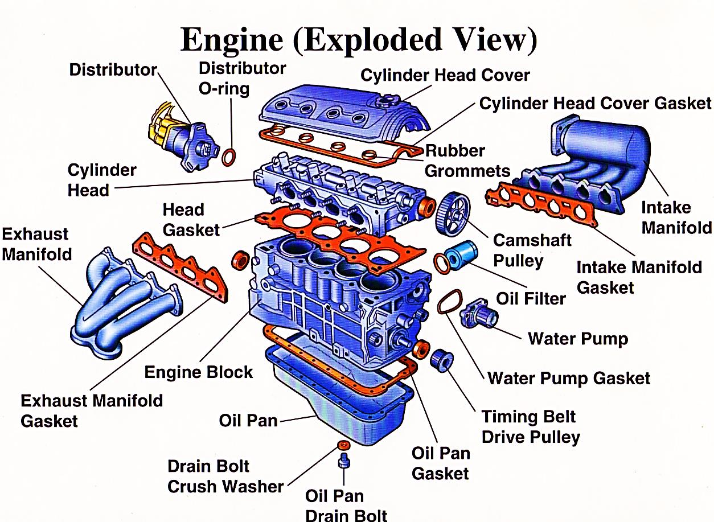
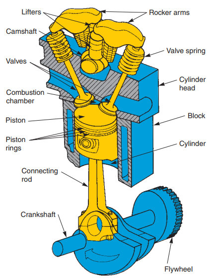
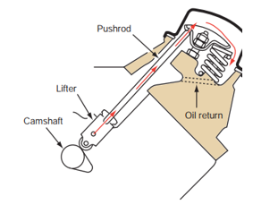

THE BASIC ENGINE
The engine provides the power to drive the wheels of the vehicle. All automobile engines, both gasoline and diesel, are classified as internal combustion engines because the combustion or burning that creates energy takes place inside the engine. Combustion is the burning of an air and fuel mixture. As a result of combustion, large amounts of pressure are generated in the engine. This pressure or energy is used to power the car. The engine must be built strong enough to hold the pressure and temperatures formed by combustion.
Diesel engines have been around a long time and are mostly found in big heavy-duty trucks. However, they are also used in some pickup trucks and will become more common in automobiles in the future. Although the construction of gasoline and diesel engines is similar, their operation is quite different.

Figure 2.2. The exploded view of the engine
A gasoline engine relies on a mixture of fuel and air that is ignited by a spark to produce power. A diesel engine also uses fuel and air, but it does not need a spark to cause ignition. A diesel engine is often called a compression ignition engine. This is because its incoming air is tightly compressed, which greatly raises its temperature. The fuel is then injected into the compressed air. The heat of the compressed air ignites the fuel and combustion takes place.
Components of an Engine
Even though reciprocating internal combustion engines look quite simple, they are highly complex machines. There are hundreds of components that have to perform their functions satisfactorily to produce output power. There are two types of engines, spark ignition (SI) and compression-ignition (CI) engine. Let us now go through the important engine components and the nomenclature associated with an engine.
The major components of the engine and their functions are briefly described below.
Cylinder Head
Cylinder head forms the top of the combustion chamber. It contains the valves, the passageways for the fuel mixture to move in and the exhaust gas moves out of the engine.
Cylinder Block
The cylinder block is the main supporting structure for the various components. The cylinder of a multi-cylinder engine is cast as a single unit, called cylinder block. The cylinder head is mounted on the cylinder block.
The cylinder head and cylinder block are provided with water jackets in the case of water-cooling with cooling fins in the case of air-cooling. Cylinder head gasket is incorporated between the cylinder block and cylinder head. The cylinder head is held tight to the cylinder block by number of bolts or studs. The bottom portion of the cylinder block is called crankcase. A cover called crankcase, which becomes a sump for lubricating oil is fastened to the bottom of the crankcase. The inner surface of the cylinder block, which is machined and finished accurately to cylindrical shape, is called bore or face.
Combustion Chamber
The space enclosed in the upper part of the cylinder, by the cylinder head and the piston top during the combustion process, is called the combustion chamber. The combustion of fuel and the consequent release of thermal energy results in the building up of pressure in this part of the cylinder.

Figure 2.3. Basic parts of engine
Cylinder
As the name implies it is a cylindrical vessel or space in which the piston makes a reciprocating motion. The varying volume created in the cylinder during the operation of the engine is filled with the working fluid and subjected to different thermodynamic processes. The cylinder is supported in the cylinder block.
Piston
It is a cylindrical component fitted into the cylinder forming the moving boundary of the combustion system. It fits perfectly (snugly) into the cylinder providing a gas-tight space with the piston rings and the lubricant. It forms the first link in transmitting the gas forces to the output shaft.
Piston Pins
Piston Pins also known as the wrist pin, it connects the piston to the small end of the connecting rod. It transfers the force and allows the rod to swing back and forth.
Piston Rings
Piston rings, fitted into the slots around the piston, provide a tight seal between the piston and the cylinder wall thus preventing leakage of combustion gases.
Connecting Rod
It connects the piston and the crankshaft and transmits the gas forces from the piston to the crankshaft. The two ends of the connecting rod are called as small end and the big end. Small end is connected to the piston by gudgeon pin and the big end is connected to the crankshaft by crankpin.
Crankshaft
It converts the reciprocating motion of the piston into useful rotary motion of the output shaft. In the crankshaft of a single cylinder engine there is pair of crank arms and balance weights. The balance weights are provided for static and dynamic balancing of the rotating system. The crankshaft is enclosed in a crankcase.
Flywheel
The net torque imparted to the crankshaft during one complete cycle of operation of the engine fluctuates causing a change in the angular velocity of the shaft. In order to achieve a uniform torque an inertia mass in the form of a wheel is attached to the output shaft and this wheel is called the flywheel.
Inlet Manifold
The pipe which connects the intake system to the inlet valve of the engine and through which air or air-fuel mixture is drawn into the cylinder is called the inlet manifold.
Exhaust Manifold
The pipe that connects the exhaust system to the exhaust valve of the engine and through which the products of combustion escape into the atmosphere is called the exhaust manifold.
Valve Train

Figure 2.4. The valve train for one cylinder
of an overhead valve engine
A valve train is a series of parts used to open and close the intake and exhaust ports. A valve is a movable part that opens and closes a passageway. A camshaft controls the movement of the valves, causing them to open and close at the proper time. Springs are used to help close the valves.
Inlet and Exhaust valves: Valves are commonly mushroom shaped poppet type. They are provided either on the cylinder head or on the side of the cylinder for regulating the charge coming into the cylinder (inlet valve) and for discharging the products of combustion (exhaust valve) from the cylinder.
Camshaft: The camshaft and its associated parts control the opening and closing of the two valves. The associated parts are push rods, rocker arms, valve springs and tappets. This shaft also provides the drive to the ignition system. The camshaft is driven by the crankshaft through timing gears.
Cams: These are made as integral parts of the camshaft and are designed in such a way to open the valves at the correct timing and to keep them open for the necessary duration.
Timing Gears: These gears drive the camshaft from the crankshaft.